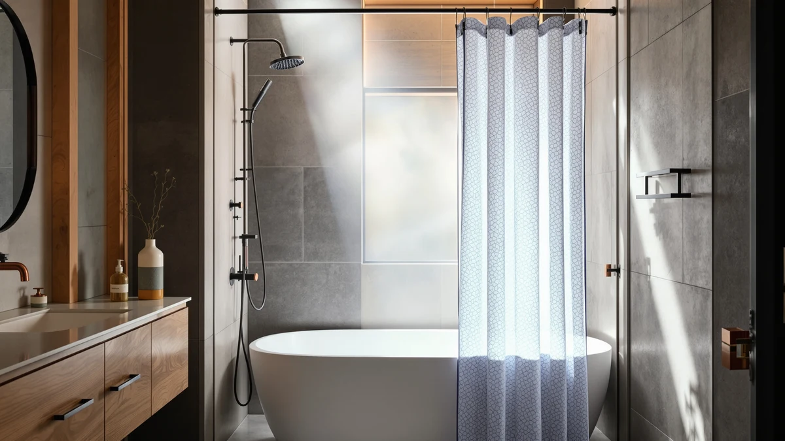

Shorter Shower Curtains (2026)
Prices and picks verified as of August 2026. Independent, reader-supported reviews.


Quick Answer
For most stand-up stalls, the N&Y HOME Short Fabric Shower is the shorter shower curtain to buy. It ships at a 60-inch drop instead of the usual 72 inches, so it clears a compact shower pan without pooling on the floor. It costs $14.88, uses the same polyester and PEVA blend as the rest of this guide, and hangs on any standard shower rod.
Our pick: N&Y HOME Short Fabric Shower, $14.88 Check Price on Amazon
Bottom line: our top pick is the N&Y HOME Short Fabric Shower Curtain Liner 60 inches Long at $14.88. The best budget option is the Mrs Awesome Extra Long Shower Curtain Liner with Magnets at $7.99.
Things to Know Before You Buy
- Standard shower curtains drop 72 inches. Shorter shower curtains typically run 54 to 60 inches, built for stand-up stalls, RVs, and smaller bathrooms where a full-length curtain pools on the floor or blocks a low shower door.
- Measure your shower stall from the rod to the floor before you shop. A curtain that hangs a couple of inches above the floor is doing its job. One that drags creates a mildew risk.
- Most picks in this guide share the same polyester and PEVA blend construction, so material choice comes down to weave and finish rather than waterproofing.
- Price and drop length matter more here than small differences in star rating. Anything above 4.5 stars with tens of thousands of reviews is a safe bet at this price point.
- If your stall turns out taller than average, skip the short options in this guide and look at a standard or extra-long curtain instead.
Shorter shower curtains solve a problem a standard 72-inch curtain creates in a lot of bathrooms: extra fabric pooling on the floor of a stand-up stall, dragging over a low shower pan, or bunching up in the tight quarters of an RV or camper bathroom. Most curtains on the market default to a 72-inch drop built for a full bathtub, which leaves anyone with a smaller stall trimming hems or living with a curtain that never quite clears the floor. We compared seven shower curtains, from a purpose-built 60-inch drop to standard 72-inch options that suit compact stalls anyway, looking at material, listed size, price and verified owner ratings.
For most stand-up stalls, the N&Y HOME Short Fabric Shower is the one to buy. At 72 inches wide with a 60-inch drop, it is built to a shorter length instead of being a standard curtain trimmed down, and at $14.88 it costs less than several of the standard-length alternatives in this guide.
If you want a lower price on a standard 72x72 curtain instead, the N&Y HOME Fabric Shower Curtain and the Amazon Basics Bathroom Shower Curtain both come in under $10 and carry tens of thousands of verified reviews. We also compared a boho print, a liner-style option, and a sage green solid for shoppers who want a compact footprint without giving up on style, plus one deliberately long curtain worth knowing about if your stall turns out taller than you think. For shorter shower curtains overall, N&Y HOME's short-drop model remains the pick most stand-up stalls should start with.
Why You Should Trust Us
We are not a testing lab, and we do not claim to be one. This guide compares shorter shower curtains and short-drop options against the manufacturer's own listing details and the verified review counts each product has earned on Amazon. Ilane Tall researches bathroom textiles for Best Shower Curtains and built this guide by cross-checking every listed dimension against buyer photos and reviews before it made the cut. We earn a commission if you buy through our links, and that has no bearing on which shorter shower curtain we recommend.
How We Picked
We started by searching for curtains explicitly sized shorter than the standard 72-inch drop, since that is what most people mean when they search for shorter shower curtains for a stand-up stall or a low-clearance pan. Only one curtain in our initial search, the N&Y HOME Short Fabric Shower, is built to a true 60-inch drop, so we widened the list to standard 72x72 curtains that other shoppers with similar spaces buy anyway, plus one extra-long option included for contrast.
We weighed three things for every entry: listed dimensions against the shower stall sizes they are marketed for, material (polyester versus PEVA blends, since that determines drape and water resistance), and a track record of verified reviews rather than a headline star rating alone. A curtain with 90,000 reviews at 4.5 stars tells you more about real-world durability than one with a handful of five-star ratings.
How We Compared
We laid the listed dimensions for each shorter shower curtain side by side against common stall sizes, from a 32-inch corner shower to a full 60-inch tub alcove, to see which drop length actually clears the floor without pooling. We also compared material specs, including polyester weight, PEVA lining and grommet count, and cross-referenced verified owner reviews on Amazon for recurring complaints about sizing, color accuracy and mildew resistance.
Price factored in as cost per verified review, a rough proxy for how many buyers stood behind a curtain long enough to leave feedback. None of this produces a numeric score, and we do not assign one. It produces a direct recommendation for each shorter shower curtain: who it fits and who should look elsewhere.
Our Picks

N&Y HOME Short Fabric Shower
What we like
- Built to a true 60-inch drop instead of a standard curtain that needs hemming or bunching at the rod
- Polyester and PEVA blend construction resists water better than a plain fabric curtain
- Priced under $15, less than several 72-inch curtains in this guide despite being purpose-cut
- Works with any standard shower rod without swapping hardware
Flaws but not dealbreakers
- Limited to one length option, so it will not work in a standard-height tub alcove
- A thinner published review history than the higher-volume 72-inch curtains in this guide
- Narrower color range than the patterned 72-inch alternatives here
| Material | Polyester / PEVA |
| Size | 72"W x 60"L (Pack of 1) |
The N&Y HOME Short Fabric Shower is the only curtain in this guide built to an actual shorter drop instead of a standard 72-inch length. At 72 inches wide and 60 inches long, it is designed for stand-up stalls, RV bathrooms, and any shower where the floor sits closer to the rod than a full-size tub alcove. That 12-inch difference matters more than it sounds: a standard curtain hung in a shorter stall either drags on the floor, which invites mildew, or bunches up at the bottom, which defeats the point of a curtain in the first place.
Construction is a polyester and PEVA blend, the same combination used across most of the curtains in this guide, so you are not trading water resistance for the shorter length. At $14.88 it lands in the middle of the pricing here, cheaper than the AmazerBath and Dynamene picks and only a few dollars more than the least expensive standard curtains. The tradeoff for going with a purpose-built short curtain is fewer color and pattern choices, and a smaller pool of published reviews than curtains that have sat on Amazon's bestseller list for years. For anyone whose stall measures under 60 inches from rod to floor, that tradeoff is worth it.

Amazon Basics Bathroom Shower Curtain
What we like
- At $9.38, one of the least expensive curtains in this guide
- Backed by 45,448 verified reviews at 4.6 stars, the second-largest review base here
- Polyester and PEVA blend holds up to daily water exposure without a separate liner for most uses
- Simple, unbranded look fits nearly any bathroom decor
Flaws but not dealbreakers
- Standard 72x72 sizing only, so it still needs trimming or a lower rod placement in a shorter stall
- No pattern or color variety beyond the basics
- Reviewers note the fabric runs thinner than the pricier fabric curtains in this guide
| Material | Polyester / PEVA |
| Size | 72x72 |
The Amazon Basics Bathroom Shower Curtain is not a shorter shower curtain in the strict sense. It ships at a standard 72x72 size, but we included it because it is the cheapest way to get a reliable curtain that shoppers then hem or hang lower to fit a stand-up stall, and because its review volume, 45,448 ratings at 4.6 stars, gives you more data on real-world durability than almost anything else we looked at.
At $9.38, it costs roughly a third of what some patterned options in this guide charge, and the polyester and PEVA blend construction matches the water resistance of the purpose-built short curtains here. Reviewers consistently note the fabric runs thinner than curtains double the price, a fair tradeoff at this cost but worth knowing before you buy. If your stall is only an inch or two shorter than standard, hanging this curtain on a lower-set rod is a cheaper fix than buying a specialty short curtain.

Barossa Design Shower Curtain Liner
What we like
- Highest review count in this guide at 91,634 ratings, with a 4.5-star average
- PEVA-forward construction is waterproof on its own, unlike woven fabric curtains
- At $9.99, cheap enough to buy as a dedicated liner behind any of the fabric picks here
- Listed hem weighting helps reduce billowing in a tight stall
Flaws but not dealbreakers
- Marketed primarily as a liner, so the look is plain compared with the boho and sage green picks
- Standard 72x72 only, the same drop-length limitation as the other non-short options
- A handful of reviewers report a stronger plastic smell out of the packaging than the fabric alternatives
| Material | Polyester / PEVA |
| Size | 72x72 |
The Barossa Design Shower Curtain Liner is not marketed as a shorter shower curtain, but with 91,634 verified reviews, the most of any product in this guide, it is worth including for anyone who wants a fully waterproof layer behind a decorative short curtain rather than relying on fabric alone. At $9.99, it is priced closer to a liner than a curtain, and the PEVA-heavy construction reflects that: it repels water outright instead of absorbing and drying like the woven fabric picks.
In a stand-up stall, some shoppers skip the outer curtain altogether and hang a liner like this one on its own, which sidesteps the shorter-length problem since a plain waterproof liner reads less awkwardly at a slightly-too-long drop than a patterned fabric curtain would. Owners report the 4.5-star average holds up over repeated washes, and the review volume here gives more confidence in that number than a curtain with a few thousand ratings. The plain look is the obvious tradeoff if you want something decorative.

AmazerBath Boho Shower Curtain Modern
What we like
- Boho pattern stands out among the mostly solid-color picks in this guide
- 4.6-star average, tied for the highest rating here
- Polyester and PEVA blend matches the water resistance of the cheaper options
Flaws but not dealbreakers
- Most expensive curtain in this guide at $19.99
- Only 1,079 verified reviews, a far thinner track record than the Barossa or Amazon Basics
- Standard 72x72 length, the same rod-height adjustment as other non-short picks in a compact stall
| Material | Polyester / PEVA |
| Size | 72x72 |
The AmazerBath Boho Shower Curtain Modern is the design-forward option in this guide, and it costs accordingly. At $19.99, it is the most expensive curtain here, more than double the price of the Mrs Awesome pick, and it earns that price with a printed boho pattern that none of the solid-color alternatives offer. The material is the same polyester and PEVA blend as the rest of the guide, so the water resistance and general durability should track closely with the cheaper picks despite the higher price.
Its 4.6-star average ties it with the Dynamene and N&Y HOME Fabric Shower Curtain for the highest rating in this guide, but with only 1,079 reviews behind that number, it has the thinnest track record of any pick here by a wide margin. That is not disqualifying, but it means the rating carries less statistical weight than the Barossa's 91,634 reviews or the Amazon Basics' 45,448. Reviewers consistently note the print holds its color after repeated washes, which matters more for a patterned curtain than a solid one.

Dynamene Sage Green Shower Curtain
What we like
- 4.6-star average backed by 22,421 verified reviews, a solid track record without the top price tag
- Solid sage green color works as a neutral alternative to white or patterned options
- Polyester and PEVA blend matches the water resistance of the other picks
Flaws but not dealbreakers
- Standard 72x72 length only
- At $15.99, costs more than the Amazon Basics or N&Y HOME Fabric options with a similar review profile
- Color options limited mostly to this single sage tone within the line
| Material | Polyester / PEVA |
| Size | 72x72 |
The Dynamene Sage Green Shower Curtain sits in the middle of this guide on both price and review count. At $15.99, it costs more than the budget picks but less than the AmazerBath, and its 22,421 reviews at 4.6 stars put it well ahead of the boho option on track record while trailing the Barossa and Amazon Basics.
The sage green colorway is the main draw here. It is a solid, muted tone that works in more bathrooms than a bright pattern without defaulting to plain white. Construction is the same polyester and PEVA blend used across most of this guide, so day-to-day water resistance should be comparable to the cheaper picks. Owners report the color holds up without fading after machine washing, a detail that matters more for a solid colored curtain than it would for white or a busy print, where fading is less noticeable.

N&Y HOME Fabric Shower Curtain
What we like
- Cheapest curtain in this guide at $8.96
- 68,277 verified reviews at 4.6 stars, second only to the Barossa in review volume
- Same brand as our top pick, the N&Y HOME Short Fabric Shower, for a matching standard-length curtain in a second bathroom
Flaws but not dealbreakers
- Standard 72x72 length, not the 60-inch short drop of the N&Y HOME Short Fabric Shower
- Basic styling with limited color options
- A handful of reviewers report the polyester feels lighter weight than the pricier Dynamene or AmazerBath fabric
| Material | Polyester / PEVA |
| Size | 72x72 |
The N&Y HOME Fabric Shower Curtain is the standard-length sibling of our top pick, and at $8.96 it is the least expensive curtain in this entire guide. Despite the low price, it carries 68,277 verified reviews at a 4.6-star average, a review volume that outpaces every pick here except the Barossa liner.
If your stall measures close to the standard 72-inch drop and you only need a small trim or a slightly lower rod to make it work, this is a cheaper route than buying the purpose-built short version. Reviewers consistently note the fabric feels lighter than the Dynamene or AmazerBath, which tracks with its lower price, but the review history suggests that lighter weight has not translated into durability complaints at scale. For anyone comparing shorter shower curtains against standard ones purely on price, this is the standard-length curtain to beat.

Mrs Awesome Extra Long Shower
What we like
- At $7.99, the cheapest curtain in this entire guide
- 29,377 verified reviews at 4.5 stars, a solid track record for the price
- 84-inch drop covers walk-in showers and tall stalls that a standard or short curtain would leave exposed
Flaws but not dealbreakers
- The opposite of what most readers of this guide are shopping for; it will pool heavily on the floor of any stall under 80 inches tall
- Standard polyester and PEVA blend, no special features beyond the extra length
- Fewer color options than the patterned picks in this guide
| Material | Polyester / PEVA |
| Size | 72x84 |
The Mrs Awesome Extra Long Shower is the one curtain in this guide that is not short at all. At 72 inches wide and 84 inches long, it is built for the opposite problem: a tall stall or walk-in shower where a standard 72-inch curtain leaves gaps at the top or does not cover the full height of the enclosure. We included it because measuring wrong is common enough that it deserves a mention here rather than a separate guide.
At $7.99, it is the least expensive curtain in this guide, and its 29,377 reviews at 4.5 stars show it holds up as well as the standard-length options despite the added material. If you started reading this guide about shorter shower curtains and realized your stall is taller than 74 inches, this is the pick to switch to instead. For everyone else with a short or standard stall, the extra 12 to 24 inches of fabric will pool on the floor and create the exact mildew risk this guide is trying to help you avoid.
Quick Comparison
| Product | Material | Price | Rating | Best for | Get it |
|---|---|---|---|---|---|
| N&Y HOME Short Fabric Shower | Polyester / PEVA | $14.88 | 4 | Stand-up stalls needing a true short drop | View on Amazon → |
| Amazon Basics Bathroom Shower Curtain | Polyester / PEVA | $9.38 | 4.6 | Cheapest reliable standard-size option | View on Amazon → |
| Barossa Design Shower Curtain Liner | Polyester / PEVA | $9.99 | 4.5 | Waterproof liner behind a shorter curtain | View on Amazon → |
| AmazerBath Boho Shower Curtain Modern | Polyester / PEVA | $19.99 | 4.6 | Boho pattern, style over price | View on Amazon → |
| Dynamene Sage Green Shower Curtain | Polyester / PEVA | $15.99 | 4.6 | Solid sage green, proven mid-range pick | View on Amazon → |
| N&Y HOME Fabric Shower Curtain | Polyester / PEVA | $8.96 | 4.6 | Cheapest overall, standard length | View on Amazon → |
| Mrs Awesome Extra Long Shower | Polyester / PEVA | $7.99 | 4.5 | Opposite pick, for tall stalls only | View on Amazon → |
What size is considered a shorter shower curtain?
Most curtains ship at a standard 72-inch drop, so anything shorter than that, typically 54 to 60 inches, counts as a shorter shower curtain.
Can I just cut a standard shower curtain shorter?
You can hem a standard 72x72 curtain like the N&Y HOME Fabric Shower Curtain or Amazon Basics pick, but you will need to reseal or refinish the cut edge to keep it from fraying, and you lose the factory-finished hem weighting along the…
The Competition
We left metal-grommet curtains with a fixed 72-inch drop and no shorter option out of this guide entirely. Several popular listings advertise a "universal fit" without stating an actual shorter length, which is exactly the ambiguity we wanted to screen out for anyone specifically shopping for shorter shower curtains.
We also passed on heavy vinyl-only curtains that skip the PEVA or polyester blend used across every pick here. Pure vinyl without a fabric or PEVA component tends to crack faster at the grommets under repeated folding, a bigger risk in a compact stall where the curtain gets handled more often in tighter quarters.
Finally, we skipped curtains sold exclusively in bundles with a rod and hooks. Bundling drives the price up without giving you a way to compare the curtain itself against the standalone options in this guide, and most stand-up stalls already have a rod installed.
Frequently Asked Questions
What size is considered a shorter shower curtain?
Most curtains ship at a standard 72-inch drop, so anything shorter than that, typically 54 to 60 inches, counts as a shorter shower curtain. The N&Y HOME Short Fabric Shower in this guide ships at a 60-inch drop, which fits most stand-up stalls without dragging on the floor.
Can I just cut a standard shower curtain shorter?
You can hem a standard 72x72 curtain like the N&Y HOME Fabric Shower Curtain or Amazon Basics pick, but you will need to reseal or refinish the cut edge to keep it from fraying, and you lose the factory-finished hem weighting along the bottom. Buying a curtain built to a shorter length from the start, or hanging the rod lower, avoids that extra step.
Do shorter shower curtains need a separate liner?
It depends on the material. A curtain built from a polyester and PEVA blend, like every pick in this guide, already resists water on its own, so a separate liner is optional rather than required. A liner-style product like the Barossa Design pick can function as a standalone waterproof layer or sit behind a more decorative short curtain.